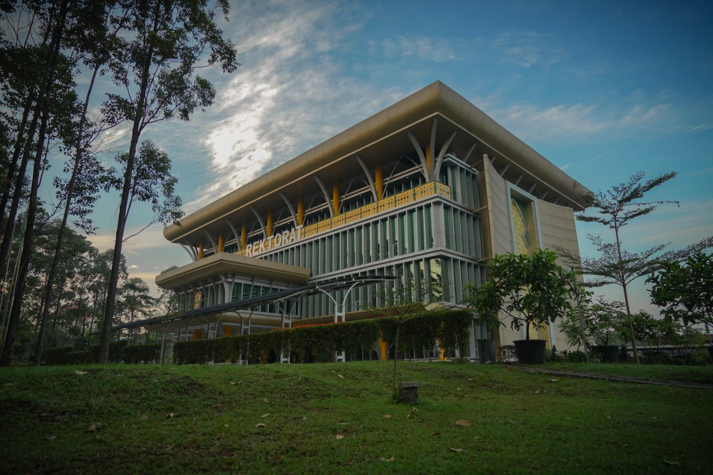
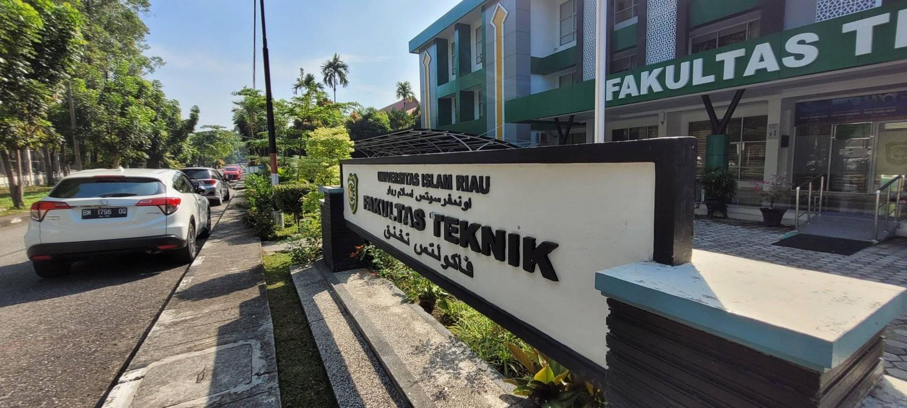
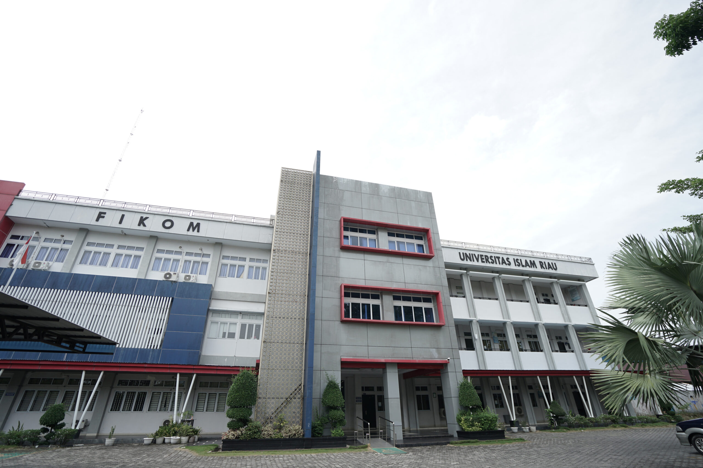
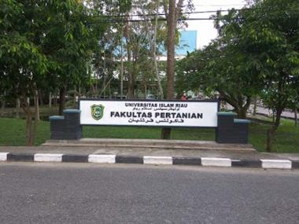
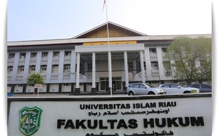
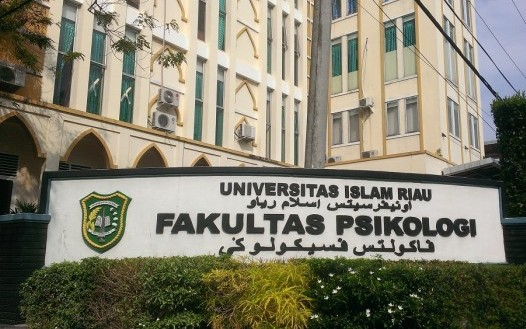
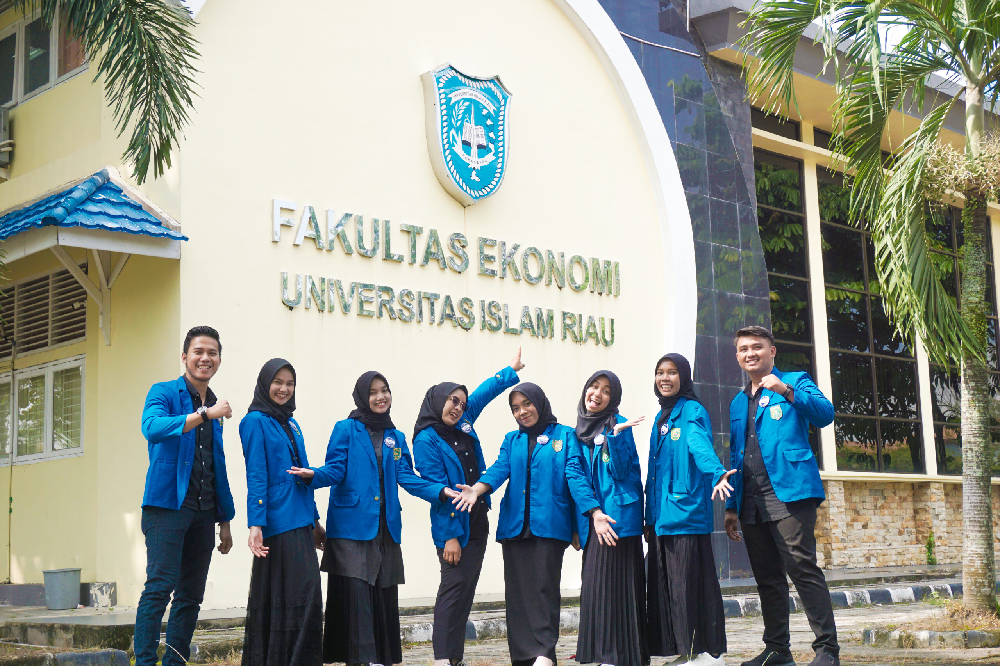
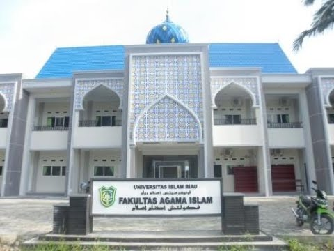
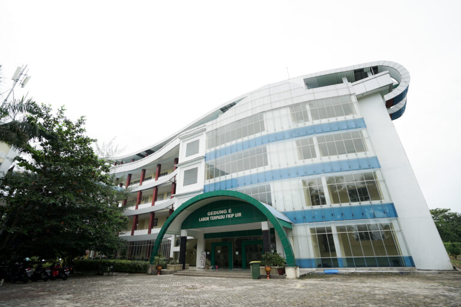

KampusKU.com
KampusKU.com merupakan website yang berisi informasi mengenai Universitas Islam Riau. Adapun informasi yang tersedia di antaranya informasi umum mengenai masing masing fakultas, dokumentasi kegiatan kampus, pengetahuan dasar tentang Teknik Informatika serta informasi penting lainnya yang relevan bagi mahasiswa dan calon mahasiswa. Website ini merupakan hasil kerja sama tim kami, yang terdiri dari Eka Maulana Hidayat, M. Ilham Ramadhana, Sri Adinda, T Arsyl Syahrowi, Widuri.
VIDEO PROFILE UNIVERSITAS ISLAM RIAU
Cek gallery Lihat
UNIVERSITAS ISLAM RIAU
 Website UIRUniversitas Islam Riau adalah perguruan tinggi tertua di Provinsi Riau berdiri pada tanggal 4 September 1962 bertepatan dengan 23 Zulkaidah 1382 H, dibawah Yayasan Lembaga Pendidikan Islam (YLPI) Riau. Tokoh Pendiri Universitas Islam Riau yaitu :
- H. Arifin Achmad
- H. Soeman Hs
- H. Zaini Kunin
- H.R Subrantas Siswanto
- Hj. Khadijah Ali
- H. Kaharuddin Nasution
Keberadaan Universitas Islam Riau (UIR) sebagai perguruan tinggi tertua di Provinsi Riau telah mengalami perjalanan sejarah yang cukup panjang. cikal bakal berdirinya UIR tak terlepas dari rangkaian pembangunan bidang pendidikan islam di Provinsi Riau khususnya di ibukota di Pekanbaru. Terbentuknya UIR ikut membangun dunia intelektual yang berperan penting dalam memajukan Provinsi Riau, yang baru terbetuk sejak tahun 1958. meskipun UIR sudah berdiri sejak 4 September 1962 sebagai realisasi cita-cita YLPI mendirikan perguruan tinggi di Provinsi Riau namun peresmiannya baru dapat dilakukan pada 18 April 1963 dengan Ketua Badan Pelaksana Pembangunan UIR yakni Datuk Wan Abdurrahman. Peresemian UIR dilakukan oleh H. Anton Timur Jaelani M.A (Kepala Bagian Urusan Perguran Tinggi Departemen Agama Republik Indonesia) dengan ditandatanganinya piagam dari Universitas Islam Riau.
FAKULTAS TEKNIK
 Website Fakultas TeknikFakultas Teknik Universitas Islam Riau (FT UIR) berdiri pada 22 Mei tahun 1964 dengan pertimbangan masih sangat langkanya Sarjana Teknik yang dimiliki/dihasilkan negara Indonesia pada umumnya dan Provinsi Riau pada khususnya pada saat itu. Program studi yang pertama kali berdiri adalah program studi Teknik Sipil pada tahun 1964. Kemudian, pada tahun 1986 secara resmi dibuka dua program studi lagi yaitu program studi Teknik Perminyakan dan Teknik Mesin. Khusus untuk program studi Teknik Perminyakan dan Teknik Mesin, tenaga pengajar (dosen) pada saat itu secara mayoritas diambil dari Ikatan Alumni ITB Riau yang sebagian besar merupakan karyawan PT. Caltex Pacific Indonesia. Tidak sampai disitu saja Fakultas Teknik UIR terus menambah program studi baru. Pada tahun 2006 dibuka program studi Perencanaan Wilayah dan Kota dan tahun 2007 dibuka program studi Teknik Informatika. Selanjutnya di tahun 2012 di buka lagi program studi Teknik Geologi. Sehingga saat ini FAKULTAS TEKNIK UIR telah memiliki enam jurusan, yaitu:
- Jurusan Teknik Perminyakan (S1)
- Jurusan Teknik Sipil (S1)
- Jurusan Teknik Mesin (S1)
- Jurusan Teknik Perencanaan Wilayah dan Kota (S1)
- Jurusan Teknik Informatika (S1)
- Jurusan Teknik Geologi (S1)
FAKULTAS ILMU KOMUNIKASI
 Website Fakultas Ilmu KomunikasiFIKOM UIR berdiri bersamaan dengan pengesahan pendirian Prodi Ilmu Komunikasi pada tanggal 29 Juni 2009 berdasarkan SK DIKTI Nomor 1078/D/T/2009 tentang Pendirian Prodi Ilmu Komunikasi. Fakultas Ilmu Komunikasi (FIKOM) Universitas Islam Riau (UIR) bersama dengan Prodi Ilmu Komunikasi berkomitmen untuk selalu mendukung dan menyediakan wadah bagi mahasiswa/I nya untuk meraih prestasi dan menjadi pribadi yang gemilang. Mahasiswa di Fakultas Ilmu Komunikasi (FIKOM) Universitas Islam Riau (UIR) selain memfokuskan dirinya pada bidang akademik, mereka juga bergabung dalam Unit Kegiatan Mahasiswa (UKM) yang dapat diikuti sesuai dengan bidang peminatannya. Setiap UKM dibina oleh Dosen yang ada di FIKOM dan di bawah pengawasan Wakil Dekan III Bagian Mahasiswa, Alumni dan Kerjasama. Sehingga kegiatan menjadi lebih sesuai untuk pemantapan kemampuan mahasiswa pada bidang catur dharma. Bila unit kegiatan yang diminati tidak ada di FIKOM, mahasiswa juga diperkenankan dan tentu saja boleh mengikuti kegiatan, komunitas, dan organisasi di luar Fakultas. Prodi FIKOM sangat mendorong mahasiswa untuk mengembangkan kemampuan dan hobinya di luar aktifitas akademik mahasiswa.
FAKULTAS PERTANIAN
 Website Fakultas PertanianFakultas Pertanian Universitas Islam Riau (UIR) didirikan pada tahun 1977, dengan mengembangkan tiga jurusan/program studi yaitu Jurusan Budidaya Pertanian/Program Studi Agronomi, Jurusan Sosial Ekonomi Pertanian/Program Studi Sosial Ekonomi Pertanian dan Jurusan Perikanan/Program Studi Budidaya Perairan. Seluruh Program Studi yang dimiliki Fakultas Pertanian sudah diakreditasi oleh Badan Akreditasi Nasional (BAN). Program Studi Agroteknologi diakreditasi dengan Surat Keputusan Badan Akreditasi Nasional Perguruan Tinggi No. 013/BAN-PT/AK-SUV-i/SI/IX2009 tanggal 11 September 2009. Program Studi Agribisnis diakreditasi, dengan Surat Keputusan Badan Akreditasi Nasional No. 008/BAN-PT/AK-IX/S1/VI/2005 tanggal 23 Juni 2005, serta Program Studi Budidaya Perairan, dengan Surat Keputusan Badan Akreditasi Nasional No.009/BAN-PT/AK-IX/2006. Namun dengan keluarnya SK tahun 2008, tentang pergantian nama, untuk jurusan Budidaya Pertanian Program Studi Agronomi menjadi Program Studi Agroteknologi dan Jurusan Sosial Ekonomi Pertanian menjadi Program Studi Agribisnis. Berdasarkan Surat Keputusan BAN-PT No. 3391/SK/BAN-PT/Akred/S.1/X/2017, menyatakan bahwa Program Study Sarjana Agribisnis, Universitas Islam Riau, Pekanbaru terakreditasi dengan peringkat A, yang berlaku sampai tanggal 12 September 2022. Prodi Budidaya Perairan juga memperoleh nilai Akreditasi yang sama yaitu A dengan Surat Keputusan BA-PT No. 2994/SK/BAN-PT/Akred/ S/VIII/2017 dengan masa berlaku sampai tahun 22 Agustus 2022 mendatang. Berkat kerja keras sivitas akademika Fakultas Pertanian UIR, pada tanggal 28 Mei 2014, Program Study Sarjana Agroteknologi Universitas Islam Riau, Pekanbaru terakreditasi dengan peringkat Akreditasi A. Hal ini sesuai dengan sertifikat akreditasi BAN-PT No. 2035/SK/BAN-PT/Akred/S/VI/2019 dan berlaku sampai dengan 25 Juni 2024. Kehadiran Fakultas Pertanian di tengah-tengah masyarakat, khususnya di Provinsi Riau pada umumnya bertujuan untuk membantu meningkatkan sumberdaya manusia dalam bidang pertanian dalam arti luas dan untuk menjawab tantangan dan peluang pengembangan sektor pertanian yang berorientasi agribisnis dan aquabisnis. "Kehadiran Fakultas Pertanian di tengah-tengah masyarakat, khususnya di Provinsi Riau pada umumnya bertujuan untuk membantu meningkatkan sumberdaya manusia dalam bidang pertanian dalam arti luas dan untuk menjawab tantangan dan peluang pengembangan sektor pertanian yang berorientasi agribisnis dan aquabisnis."
FAKULTAS HUKUM
 Website Fakultas HukumFakultas Hukum Universitas Islam Riau adalah salah satu fakultas yang tertua di lingkungan Universitas Islam Riau, sekaligus pula sebagai fakultas hukum yang tertua di Propinsi Riau. Fakultas Hukum Universitas Islam Riau adalah salah satu Fakultas dengan setatus program studi yang berakreditasi “Unggul” berdasarkan SK BAN PT No. 4266/SK/BAN-PT/Ak.KP/S/V/2024 dan bersertifikat ISO : 2015 di Universitas Islam Riau. Pada priode awal berdirinya Universitas Islam Riau, Fakultas Hukum sebelumnya merupakan salah satu jurusan, yaitu jurusan hukum pada Fakultas Agama Universitas Islam Riau. Perkuliahan perdana dilakukan pada tanggal 4 september 1962. Setahun kemudian, tepatnya pada tanggal 18 April 1963, jurusan hukum di Fakultas Agama dipisahkan menjadi tersendiri yaitu Fakultas Hukum Iniversitas Islam Riau.
FAKULTAS PSIKOLOGI
 Website Fakultas PsikologiFakultas Psikologi berdiri atas dasar dan prinsip membangun masyarakat Riau sejahtera dengan berlandaskan nilai Islam dan budaya melayu. Atas dasar tersebut, Rektor UIR meminta Bapak Tukiman Khateni, yang saat itu masih kuliah S2 Psikologi di UGM untuk membentuk tim dan menyusun borang pendirian Fakultas Psikologi UIR. Pada tahun 2003 borang diajukan ke DIKTI, kemudian DIKTI mengembalikan borang dengan beberapa catatan yang perlu dilengkapi, sehingga pada akhirnya pada tanggal 30 Desember 2004 Surat Keputusan pendirian program studi dari DIKTI keluar. Perkuliahan pertama Fakultas Psikologi UIR dimulai pada bulan Agustus 2005 dengan 90 mahasiswa.
FAKULTAS EKONOMI DAN BISNIS
 Website Fakultas Ekonomi dan BisnisFakultas Ekonomi dan Bisnis UIR secara resmi dibuka oleh Yayasan Pendidikan Islam (YLPI) Daerah Riau pada tanggal 1 Juli 1981 bedasarkan SK. No. 19/Kep. 1/1978 dengan kegiatan operasional dimulai pada tanggal 22 Agustus 1981. Sebelum Fakultas Ekonomi berdiri sudah ada Akademi Akuntansi dan Akademi Sekretaris Manajemen yang pada dasarnya merupakan cikal bakal berdirinya Fakultas Ekonomi. Pada perkembangan selanjutnya Akademi Akuntansi merupakan salah satu Program Studi yang bernaung dibawah Fakultas Ekonomi dengan nama program Akuntansi D.III, sedangkan ASMI selanjutnya diasuh oleh Fakultas Ilmu Sosial dan Politik yang berganti nama menjadi Program D.III Kesekretariatan.
FAKULTAS AGAMA ISLAM
 Website Fakultas Agama IslamSaat ini UIR Pekanbaru memiliki sembilan fakultas dan satu diantaranya adalah Fakultas Agama Islam (FAI). FAI UIR Pekanbaru terus mengembangkan kiprahnya dengan membuka berbagai program studi keislaman bertujuan melahirkan sarjana muslim berkarakter islami dan profesional yang berwawasan luas tentang ilmu pendidikan dan keislaman. Sebelum berubah nama menjadi Fakultas Agama Islam (FAI) UIR Pekanbaru, fakultas ini dahulu bernama Fakultas Ushuluddin. Fakultas Ushuluddin UIR Pekabaru, sebagai cikal bakal munculnya FAI UIR Pekanbaru, secara resmi didirikan pada tangal 17 Mei 1969. Fakultas Ushuluddin yang mengasuh Jurusan Dakwah mengalami perubahan karena Jurusan Dakwah menjadi fakultas tersendiri di lingkungan Penguruan Tinggi Agama Islam (PTAI) dengan dikeluarkan SK Menteri Agama Nomor: E/189/1996 tanggal 12 Nopember 1996, sekaligus terjadi perubahan nama Fakultas Ushuluddin menjadi Fakultas Agama Islam Jurusan Aqidah Filsafat dengan status “disamakan” dan Jurusan Komunikasi Penyiraan Islam (Dakwah) berstatus “terdaftar”.
FAKULTAS KEGURUAN DAN ILMU PENDIDIKAN
 Website Fakultas Keguruan dan Ilmu PendidikanTujuan utama FKIP adalah untuk menghasilkan lulusan yang memiliki kompetensi sebagai guru dan tenaga pendidik. Lulusan FKIP diharapkan mampu menguasai ilmu pendidikan, bidang studi tertentu, serta memiliki keterampilan pedagogik yang baik. FKIP memiliki peran yang sangat strategis dalam meningkatkan kualitas pendidikan di Indonesia. Lulusan FKIP akan menjadi ujung tombak dalam mencerdaskan kehidupan bangsa. Jika Anda tertarik dengan dunia pendidikan dan ingin berkontribusi dalam mencerdaskan kehidupan bangsa, maka FKIP adalah pilihan yang tepat. Dengan memilih FKIP, Anda akan mendapatkan bekal ilmu pengetahuan dan keterampilan yang dibutuhkan untuk menjadi seorang pendidik yang profesional. FKIP menawarkan berbagai program studi yang terkait dengan pendidikan, antara lain: Pendidikan Guru Sekolah Dasar (PGSD), Pendidikan Matematika, Pendidikan Bahasa Indonesia, Dan masih banyak lagi.
FAKULTAS ILMU SOSIAL DAN POLITIK
 Website Fakultas Ilmu Sosial dan Politik
Website Fakultas Ilmu Sosial dan Politik
FISIPOL UIR menawarkan pendidikan tinggi yang inovatif dan relevan, membekali mahasiswa dengan wawasan mendalam dalam ilmu sosial dan politik untuk menjadi pemimpin masa depan yang berkualitas. FISIPOL UIR akan terus meningkatkan prestasi dan kompetensi agar memberikan layanan terbaik untuk seluruh civitas akademika serta berkontribusi untuk kemajuan bangsa dan negara. Tahukah kamu bahwa UIR merupakan satu-satunya Universitas yang memiliki Prodi Kriminologi di Wilayah Sumatera. Di Indonesia, Prodi Kriminologi hanya ada di 3 Universitas dan UIR lah salah satu yang memilikinya.